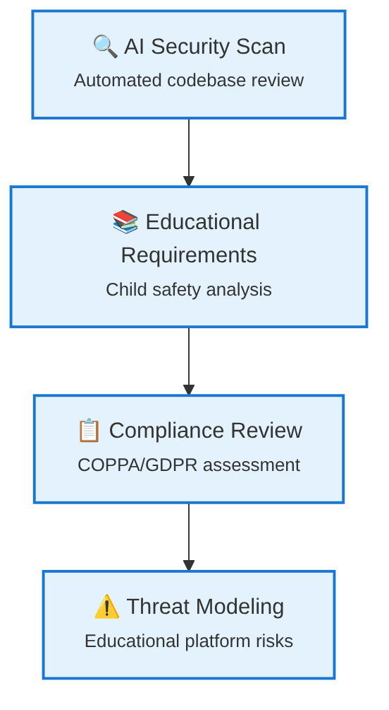
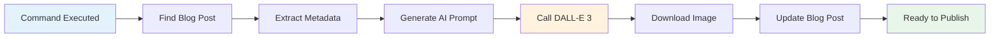
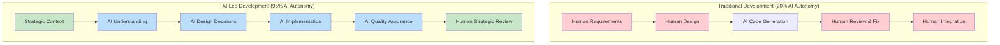
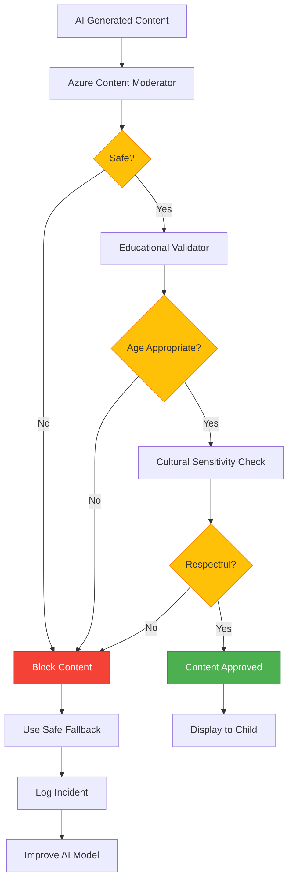
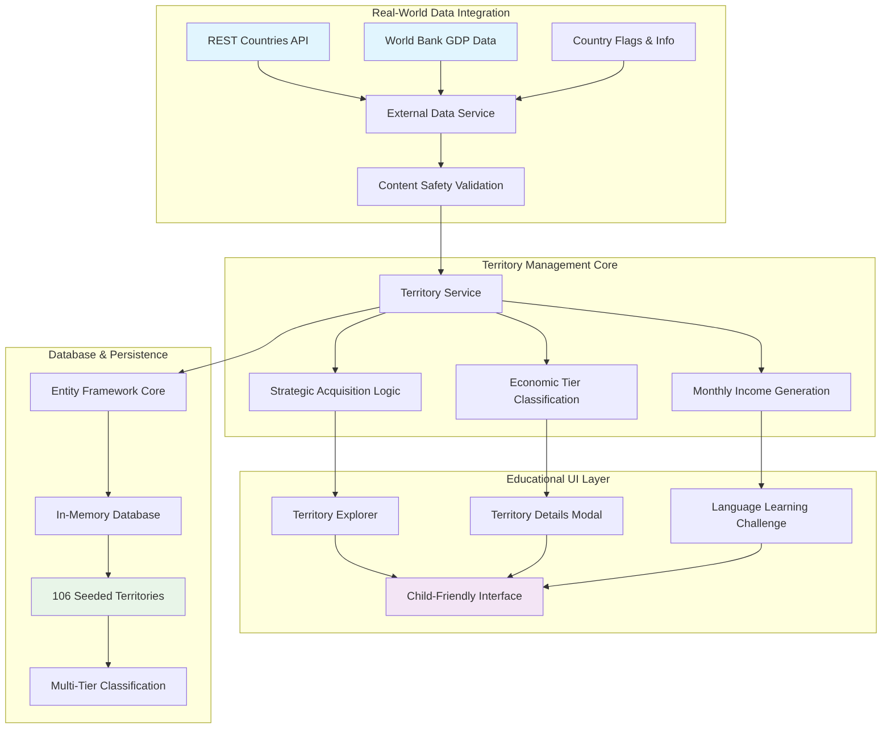
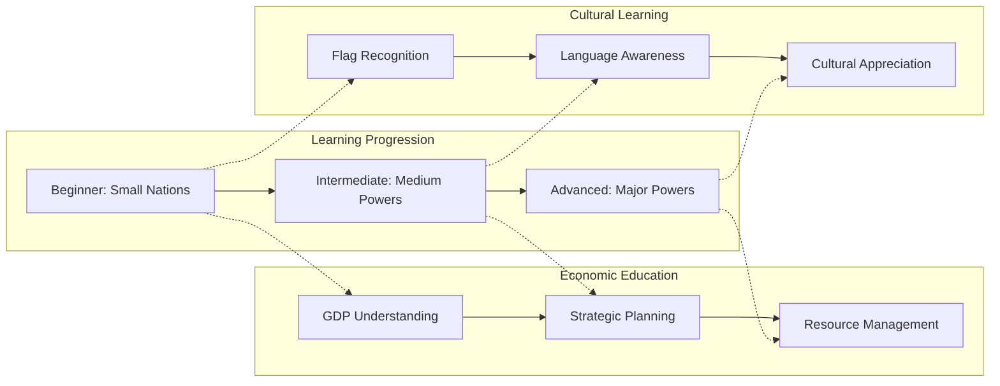
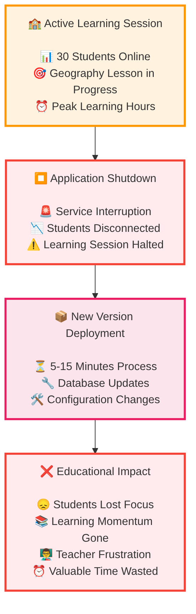
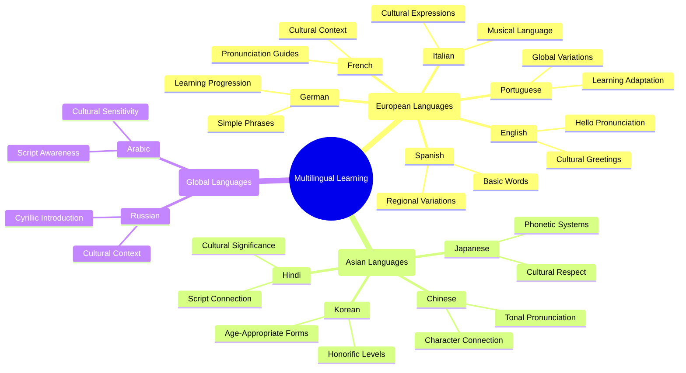
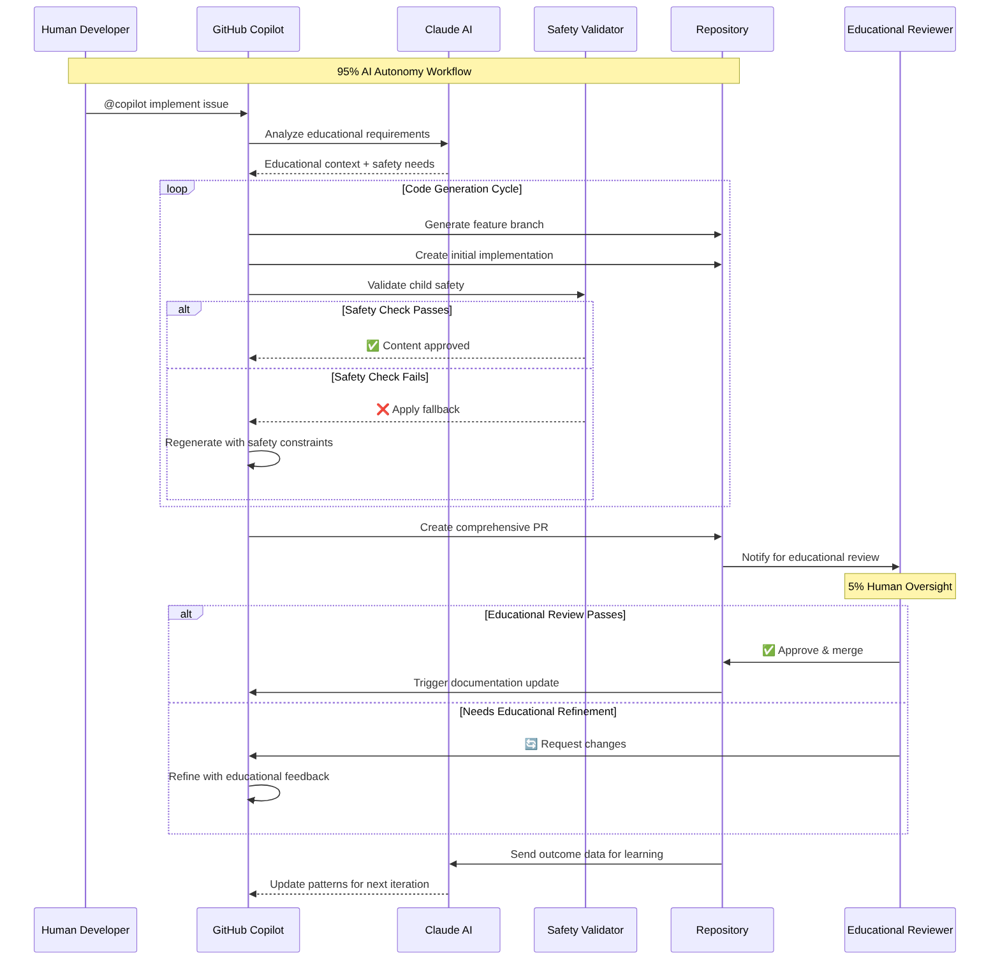
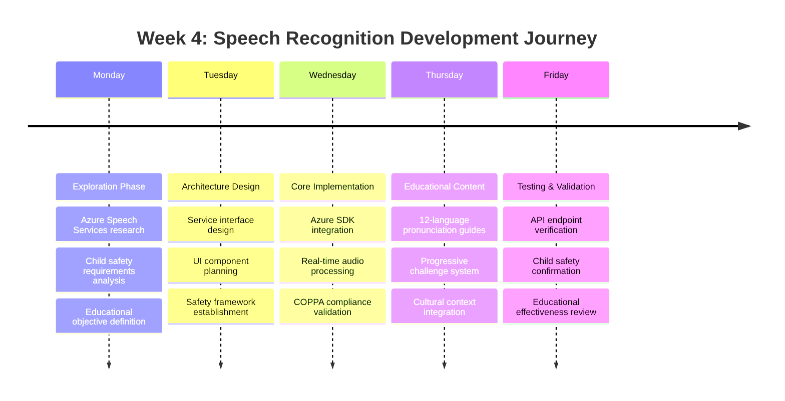

Merlive on real documents
Real Mermaid, as its authors wrote it, to hold Merlive to: not samples written to show a feature. Each is one block of a public document. What Merlive makes of each is written to docs/WILD.md by `npm run wild`.
12 held here. Looked at by Victor: 0 of 12; fine: 0.
| The measure on 2026-11-26, at 0.5.0: 135 real blocks | |
|---|---|
| Drawn, no rule broken | 103 |
| Refused, a rule broken | 10 |
| Left as Mermaid, a kind not drawn | 22 |
flow small Drawn not looked at yet
WorldLeadersGame / 2025-08-07-enhancing-security-authentication-educational-game-development.md, block 3 · 344px wide

flow notes Drawn, with notes not looked at yet
WorldLeadersGame / quick-blog-image-generation.md, block 1 · 184px wide
- written left to right, drawn top to bottom: left to right it would be 1584px wide, wider than most screens. "%% turn: no" keeps it as written

flow middle Drawn not looked at yet
WorldLeadersGame / 2025-08-10-ai-95-percent-control-educational-game-development.md, block 5 · 452px wide

flow thirteen Drawn not looked at yet
WorldLeadersGame / 2025-08-06-ai-orchestrated-game-development-first-working-poc.md, block 6 · 546px wide

flow wide Drawn, with notes not looked at yet
WorldLeadersGame / 2025-08-05-territory-management-real-world-integration-complete.md, block 1 · 1348px wide
- the frame of "Territory Management Core" is left out: "Entity Framework Core" is not in it and would fall inside

refused crossing Refused not looked at yet
WorldLeadersGame / 2025-08-05-territory-management-real-world-integration-complete.md, block 2 · 784px wide
- P4: 2 crossings, and 12 links allow 1
- the frame of "Economic Education" is left out: "Intermediate: Medium Powers" is not in it and would fall inside
- the frame of "Cultural Learning" is left out: "GDP Understanding" is not in it and would fall inside

refused long words Refused not looked at yet
WorldLeadersGame / 2025-08-08-zero-downtime-blue-green-deployment-educational-platforms.md, block 1 · 344px wide
- P6: "❌ Educational Impact 😞 Students Lost Focus 📚 Learning Momentum Gone 👨🏫 Teacher Frustration ⏰ Valuable Time Wasted" needs 5 lines; shorten it or put the detail in a "%% note"

refused mindmap Refused not looked at yet
WorldLeadersGame / 2025-08-05-ai-builds-multilingual-learning-platform.md, block 3 · 912px wide
- P4: 10 crossings, and 39 links allow 4

sequence wide Drawn not looked at yet
WorldLeadersGame / 2025-08-04-ai-first-development-workflow-copilot-agents.md, block 3 · 1381px wide

sequence directive Drawn, with notes not looked at yet
WorldLeadersGame / 2025-08-08-azure-cost-optimization-educational-platforms-per-user-attribution.md, block 2 · 1128px wide
- line 21: A is not active, so there is nothing to deactivate
- line 25: A is not active, so there is nothing to deactivate
- line 34: not read: "'actorBkg': '#e3f2fd',"
- line 35: not read: "'actorBorder': '#1565c0',"
Mermaid could not draw this one.
timeline Drawn not looked at yet
WorldLeadersGame / 2025-08-05-ai-builds-multilingual-learning-platform.md, block 1 · 1208px wide
